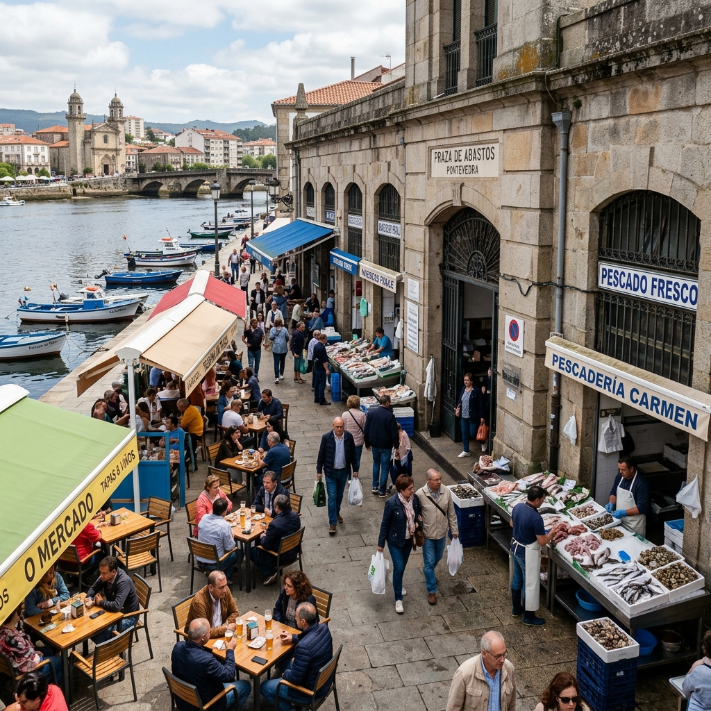
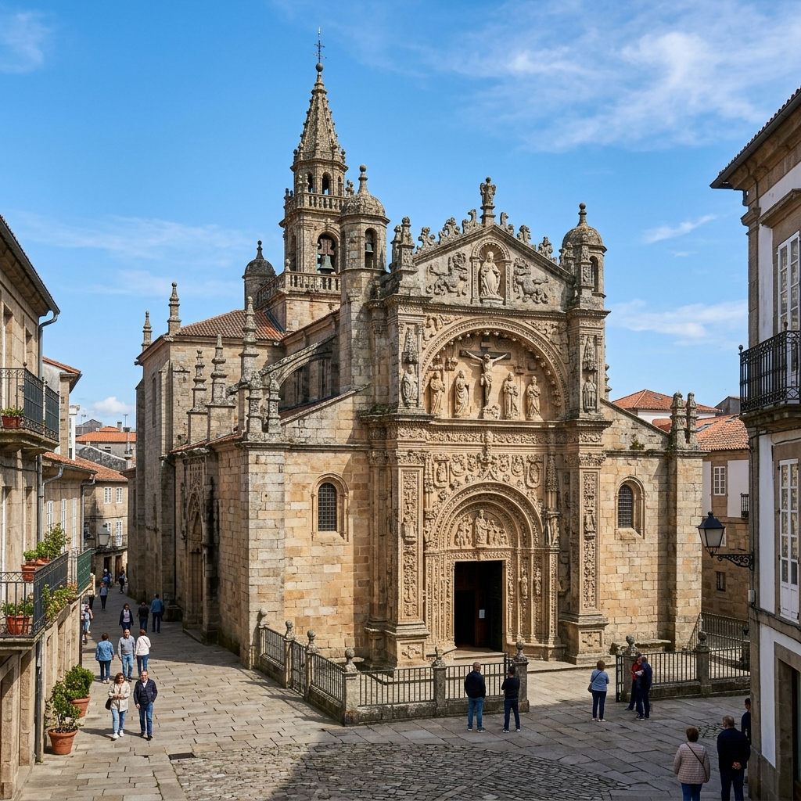
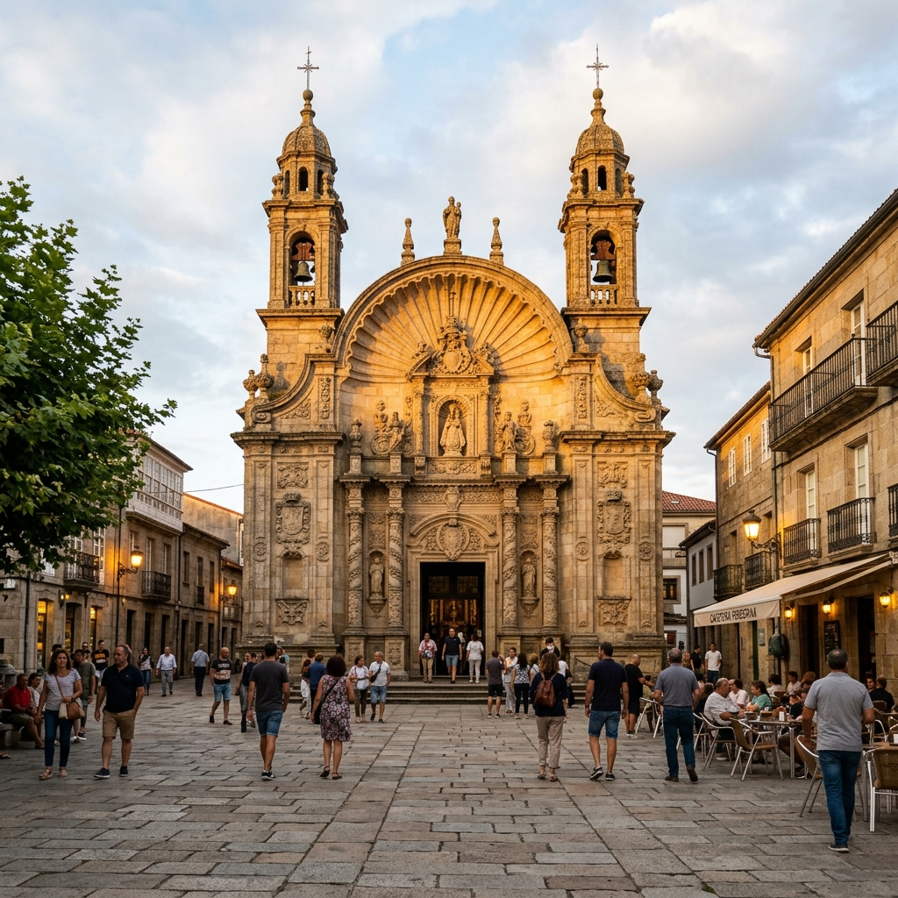
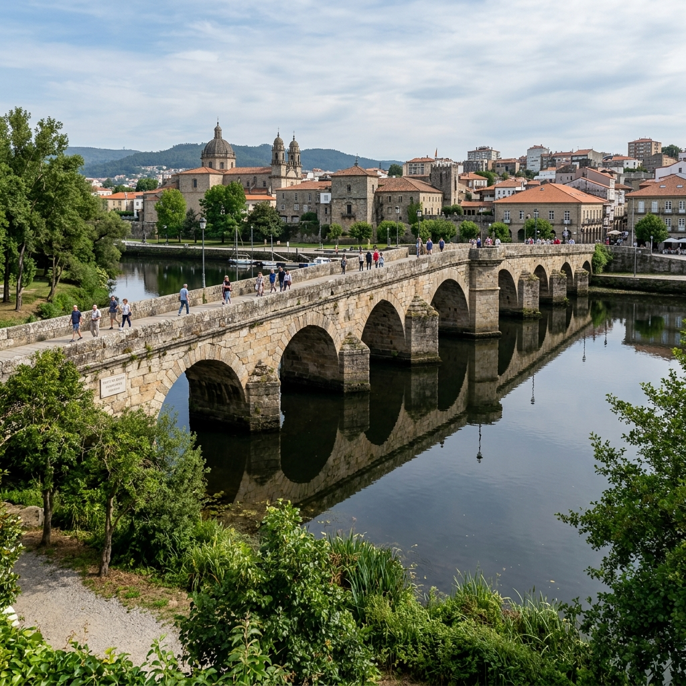
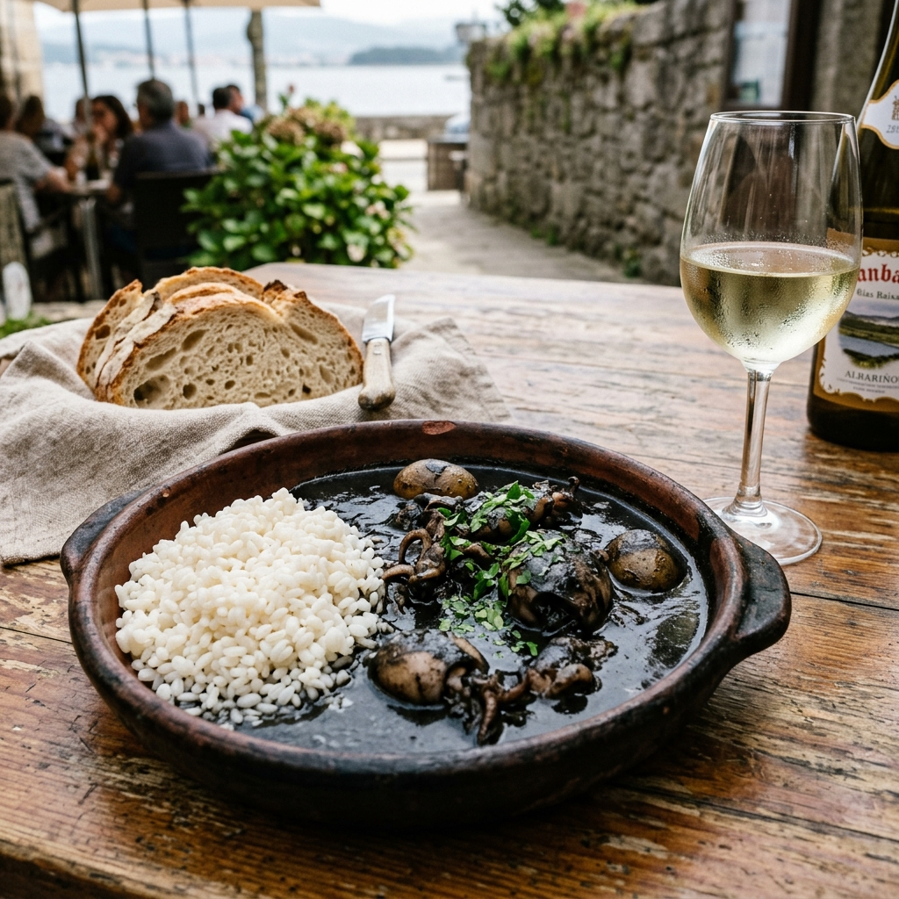

¿Por qué Miña Pontevedra y no Santiago o Vigo?
Santiago tiene la catedral y Vigo la gran urbe, pero Pontevedra tiene algo que ellas ya perdieron: la tranquilidad de caminar sin coches.
| Miña Pontevedra ✅ | Santiago / Vigo / Coruña ❌ |
|---|---|
| Centro 100% peatonal: caminas sin mirar antes de cruzar | Santiago: masificación del Camino / Vigo: tráfico denso |
| Cero atropellos fatales en 25 años | Otras ciudades: colapsadas por el coche |
| Marisco fresco en el mercado cocinado arriba por poco dinero | Santiago: precios orientados al turista |
| Metrominuto: todo el centro a 5-10 min a pie | Vigo: dependencia del vehículo o autobús |
| Islas Cíes a 30 min y cuna del Albariño al lado (Cambados) | Coruña: más alejada del Parque Nacional Cíes |
"Santiago tiene la catedral. Nosotros tenemos la tranquilidad que Santiago perdió."
Santiago es para peregrinar una vez. Miña Pontevedra es para quedarte a vivir.
Qué ver según tu tiempo
Itinerarios completos de 09:00h a 22:30h aprovechando la ciudad y sus alrededores:
Día 1: Inmersión Total en a Boa Vila (09:00h - 22:30h)
Casco histórico peatonal, mercado, gótico mareante, puente romano y ruta nocturna de tapas.

09:00h · DESAYUNO1. Mercado de Abastos
Café matutino a orillas del Lérez entre mariscos recién descargados de la ría.
2. Ferrería, San Francisco & Leña
Paseo señorial entre cruceiros de granito, arcadas medievales y forjas.

12:30h · GÓTICO3. Basílica de Santa María
Gótico plateresco do Gremio de Mareantes y Ruínas de Santo Domingo.
4. Almuerzo Marinero
Marisco fresco del mercado cocinado al momento arriba o en Rúa Michelena.

16:30h · SIMBOLISMO5. Peregrina & Loro Ravachol
Iglesia con planta en forma de vieira y estatua del célebre loro Ravachol.

18:00h · CAMINO6. Ponte do Burgo
Puente romano-medieval por donde pasa el Camino de Santiago Portugués.
7. Alameda de Valle-Inclán
Paseo arbolado y jardines señoriales donde se inspiraba Valle-Inclán.

21:30h · TAPEO8. Tapeo na Praza da Verdura
Cena de chocos en su tinta, pulpo á feira y vino blanco en terrazas.
7 Experiencias que solo pasan en Miña Pontevedra
1. Cruzar el centro descalzo sin miedo
Más de 25 años sin un solo atropello en el casco histórico. La primera ciudad de España donde los peatones recuperaron el control total de la calle.
2. Comprar marisco en el mercado y cocinarlo arriba
En el Mercado de Abastos eliges marisco fresco directo de la ría en la planta baja y te lo preparan al instante en las gastrobarras del primer piso.
3. Entrar en una iglesia con forma de vieira
El Santuario da Peregrina es el único templo con planta en forma de concha de vieira, parada emblemática del Camino Portugués.
4. Hacerle una foto al loro más famoso de España
La estatua de bronce de Ravachol en la Praza da Peregrina rinde tributo a la mascota más irreverente del siglo XIX.
5. Café en la Alameda de Valle-Inclán
Disfruta de la tranquilidad del paseo arbolado junto al Lérez que inspiró al genial dramaturgo gallego.
6. Cruzar el puente del siglo XII que da nombre a la ciudad
El Ponte do Burgo (Pontis Veteris) cruza el río Lérez uniendo la historia romana y el Camino de Santiago.
¿Listo para recorrer Miña Pontevedra con tu móvil?
Accede gratis a nuestro Free Tour Digital: audios narrados con voz natural, mapas GPS interactivos, anécdotas locales y acertijos en cada parada.